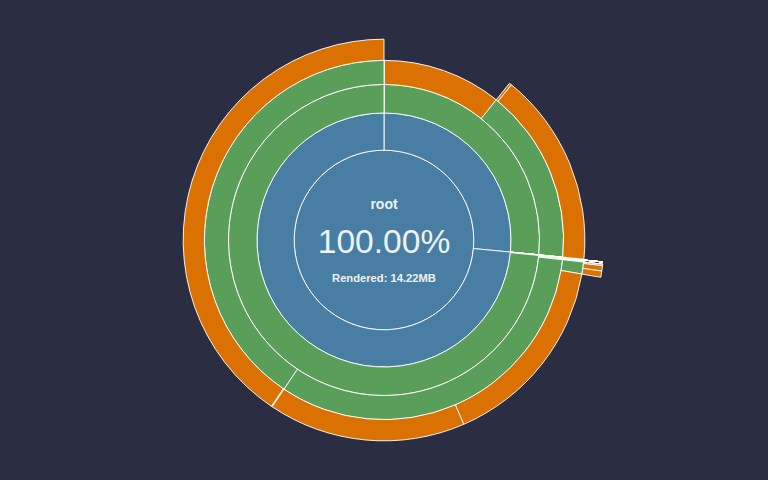
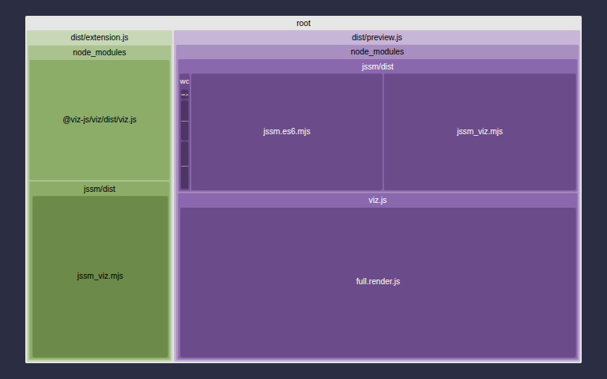
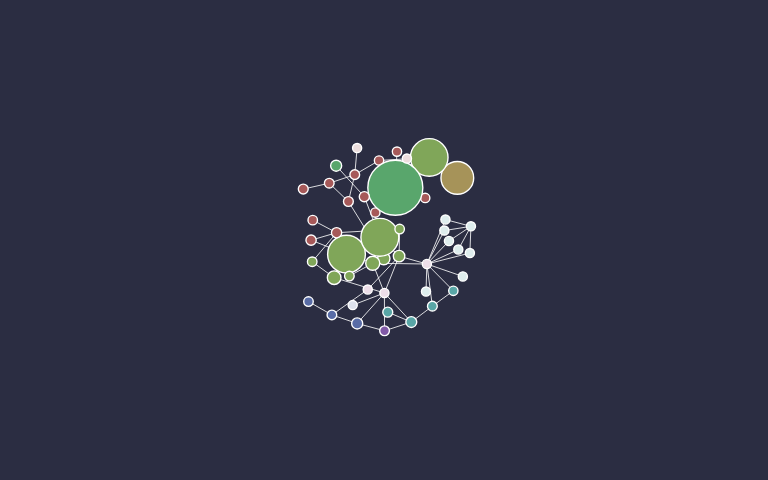

Version 0.3.2 was built on Saturday, July 18, 2026 at GMT-07:00
1784403027697from hash44da083.
A VS Code extension that renders ```fsl and ```jssm fenced code blocks in
the Markdown preview as live, interactive FSL
state machines — the full <fsl-instance> IDE, minus the editor.
Screenshot pending — capture one before publishing to the Marketplace (see
notes/marketplace-publish.md).
Drop this into any .md file and open VS Code's Markdown preview (Ctrl+Shift+V / Cmd+Shift+V):
```fsl width=400
Red -> Green -> Yellow -> Red;
```
The fence becomes a live, interactive traffic-light state machine — click an action button and watch the diagram re-render. samples/demo.md in this repo is a runnable walkthrough of every supported case: a plain fence, a sized fence, a non-fsl fence left as an ordinary code block, a broken fence's error box, and a stochastic machine (ready for when jssm ships its stochastic tooling).
| Count | Statement coverage | |
|---|---|---|
| Unit | 134 | 87.09% |
| Stochastic | 3 | 0% |
| Total test cases | Documentable symbols | Documentation coverage |
|---|---|---|
| 137 | 3 | 66% |
 |
 |
 |
This extension isn't on the Marketplace yet — publishing is a separate, later, user-gated step. For now, build and install the .vsix locally:
npm install
npm run build
npx vsce package
code --install-extension vscode-fsl-0.3.2.vsix
Reload VS Code, open (or create) a Markdown file containing an ```fsl fence, and open its preview.
```fsl (synonym ```jssm, case-insensitive) fences follow a portable grammar meant to work the same way across every Markdown host that chooses to support it — GitHub, static-site generators, future editors, and this extension. The full grammar, including the element/format tokens this extension ignores, lives in the jssm fence-convention spec.
As of 0.3.0, fences also colorize in the raw Markdown source view, not just the live preview: the extension registers jssm's published TextMate grammar for .fsl files and injects it into ```fsl/```jssm fenced code blocks via a VS Code markdown-injection grammar.
| Token | Meaning | Honored here? |
|---|---|---|
```fsl / ```jssm |
Fence language — activates this extension | Yes, required |
width=N / width=N% |
Panel width | Yes |
height=N / height=N% |
Panel height | Yes |
max-width=N / max-width=N% |
Upper bound on natural panel width (moot if width= is also given) |
Yes |
max-height=N / max-height=N% |
Upper bound on natural panel height (moot if height= is also given) |
Yes |
image code editor actions info-panel toolbar title footer ide (element tokens) |
Which slot(s) a static host renders | Ignored |
svg png jpeg dot gif (format tokens) |
Which output format a static host renders | Ignored |
This extension is deliberately the grammar's maximalist interpreter: VS Code already is the editor, so every valid fence always renders the full live <fsl-instance> IDE — viz, actions, info-panel, toolbar, title, footer — minus the editor slot, no matter which element/format tokens the fence carries. Only width=/height=/max-width=/max-height= change anything here, because sizing is meaningful in any host. Write the other tokens for wherever else the same Markdown travels; this preview always shows the richest live version regardless.
.fsl filesThe extension declares the fsl language for .fsl files (comment toggling,
bracket matching, and syntax coloring all work — syntax colors come from jssm's
own published TextMate grammar, registered here as of 0.3.0). Once the extension is
on the Marketplace, VS Code will automatically suggest it to anyone who opens a
.fsl file. The live rendering itself lives in the Markdown preview — .fsl
files are declared for association and editing convenience.
Invalid FSL never renders a silent blank. A bordered "FSL error" box appears with the parser's message, and the raw (escaped) source stays visible beneath it:
```fsl
this is not -> valid ->;
```
The live diagram and IDE chrome follow VS Code's active color theme — light, dark, and both high-contrast variants — automatically, with no reload; switch themes and the diagram restyles in place.
The very first frame you see is different: it's rendered host-side (outside any webview, before a theme is knowable) and shown immediately so the preview never sits blank. That first-paint SVG uses Graphviz's default light palette on a white ground and does not follow the VS Code theme — a deliberate, documented compromise. It swaps automatically for the theme-aware live diagram about a second later, once the in-webview engine finishes its own first render; there's no flash or visible seam.
height= token is capped at a default viewport-scale height, but a very tall/narrow machine's live diagram can still spill past that cap in some cases. Upstream bug: fsl#1934. Workaround: give the fence an explicit height= (or width=) token — or, to preserve natural aspect while still capping growth, an explicit max-height= (or max-width=) token.
npm install
npm run build # full pipeline: tests, typecheck, lint, bundle, TypeDoc, changelog, site
npx vitest run # just the unit suite — faster, for iteration
npm run just_test # unit + stochastic + mutation-config
npm test currently runs the same full pipeline as npm run build, not a quick test-only pass — use npx vitest run while iterating, or npm run just_test for comprehensive test coverage including stochastic tests.
Press F5 in VS Code to launch the Extension Development Host (.vscode/launch.json), then open a Markdown file with an fsl/jssm fence and preview it.
MIT